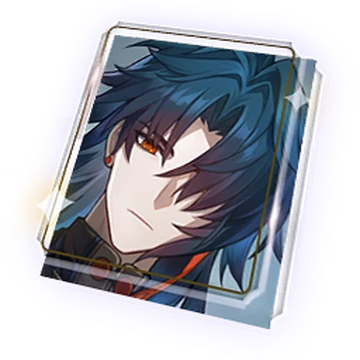
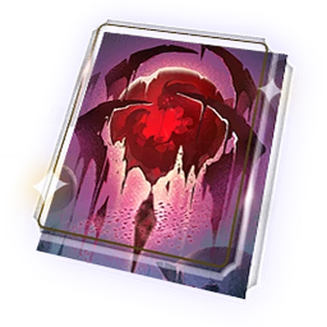
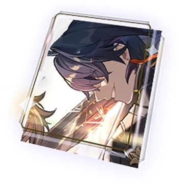
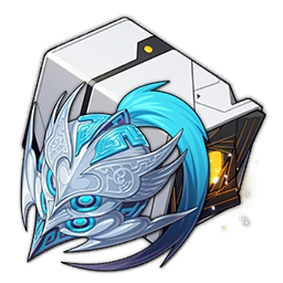
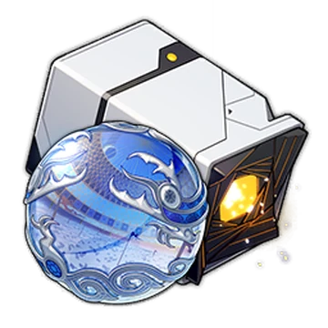

| Tổng Quan | |
|---|---|
| Tên | Yunli |
| Phe Phái | ? |
| Vận mệnh | Huỷ Diệt |
| Thuộc Tính | Vật Lí |
| Mô Tả | Thợ săn kiếm của Xianzhou Zhuming, cháu gái yêu quý của Tướng Quân Vực Nến Huaiyan, tính tình thẳng thắn. Từ nhỏ đã theo Huaiyan học kiếm thuật và rèn luyện, là kiếm sĩ thiên tài trẻ tuổi nhất của Vòng Lửa Tám Lá. Cực kỳ căm ghét kiếm ma có nguồn gốc từ Zhuming, thề rằng sẽ “tìm và chặt đứt tất cả những thanh kiếm ma”. |
Nón Ánh Sáng
- Điệu Múa Dưới Hoàng Hôn
-  Bến Bờ Xa Diệu Vợi
- Vật Không Thể Thay Thế
-  Sự Sụp Đổ Của Aeon
- Dưới Bầu Trời Xanh
-  Không Nơi Ẩn Náu
Di Vật Và Phụ Kiện
-  Dũng Khí Ngút Trời
-  Duran - Vương Triều Sói Hoang
Stats Check
-
Chỉ Số Chính: Thân: Tỷ Lệ Bạo Kích / ST Bạo Kích Chân: Tấn Công% Quả Cầu Vị Điện: Tăng ST Vật Lí Dây Liên Kết: Tấn Công%Chỉ Số Phụ: Tỷ Lệ Bạo Kích / ST Bạo Kích / Tấn Công% / Kháng Hiệu Ứng
-
Chỉ Số Tốt Nghiệp: Tỷ Lệ Bạo Kích: 90 - 100% trở lên ST Bạo Kích: 170% hoặc hơn Tấn Công: 3400 hoặc hơn